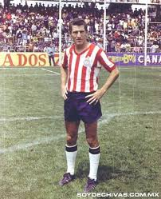

Examen de las chivas
El club deportivo Guadalajara o mas bien conocido como chivas, se
se fundo el 8 de mayo de 1906, en 2003 fue adquirido por el empre-
sario: Jorge Vergara, el dueño actual del equipo es su hijo, Amaury
Vergara. Las chivas cuentan con 12 titulos de liga MX, esto conse-
guido con su mas grande tradicion, "Jugar con puro jugador mexicano"
Estos son los 10 maximos goleadores del club desde su fundación:
Omar bravo con 160 goles
Salvador Reyes con 154 goles
Javier Valdivia con 98 goles

Eduardo de la Torre con 89 goles
Benjamin Galindo con 85 goles
Maximiano Prieto con 84 goles
Ramón Morales con 80 goles
Javier de la Torre con 78 goles
Francisco Jara con 72 goles
Isidoro Díaz con 62 goles
Accede a google para verificar los datos
Naciste en uno de los siguientes anios?
1956-57
1958-59
1959-60
1960-61
1961-62
1963-64
1964-65
1969-70
1986-87
1997
2006
2017
En caso de que si, "Felicidades naciste en un anio en el que las chivas fueron campeones"
Derek Brayan Estrada Mariscal 4to Semestre B